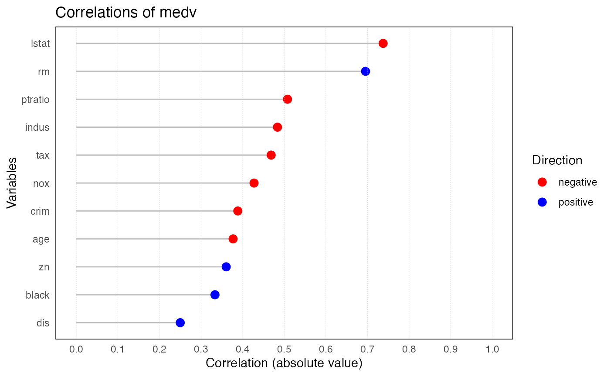

ryx.RmdThe ryx package provides functions for conducting correlation analysis, visualizing the results, and summarizing the findings. It is designed to calculate and display correlation coefficients between a dependent variable (y) and one or more independent variables (x), and to visualize these correlations using ggplot2. ryx(): Conducts the correlation analysis. print.ryx(): Prints a summary of the results. plot.ryx(): Visualizes the results. summary.ryx(): Provides a summary of key statistics from the correlation analysis.
In this vignette, the Boston housing dataset from the MASS package is utilized as an example. The goal is to analyze the correlations between the dependent variable medv (median house value) and the independent variables in the dataset.
The ryx() function calculates the correlation coefficients between a dependent variable (y) and one or more independent variables (x). If the x variable is not specified, ryx() will use all numeric variables in the dataset except for the dependent variable.
result <- ryx(Boston, y = "medv") # Perform correlation analysisThe print.ryx() function is designed to take the results of the ryx() function and display them in an more organized format. It includes the following information for each independent variable: - variable: The name of the independent variable. - r: The correlation coefficient (rounded to 3 decimal places). - p_display: The p-value formatted in scientific notation, rounded to 2 decimal places. - sigif: The significance level, represented as stars (, , , or no stars based on p-value thresholds).
print(result)
#> Correlations of medv with
#> variable r p sigif
#> lstat -0.738 < 2e-16 ***
#> rm 0.695 < 2e-16 ***
#> ptratio -0.508 < 2e-16 ***
#> indus -0.484 < 2e-16 ***
#> tax -0.469 < 2e-16 ***
#> nox -0.427 < 2e-16 ***
#> crim -0.388 < 2e-16 ***
#> age -0.377 < 2e-16 ***
#> zn 0.360 < 2e-16 ***
#> black 0.333 1.32e-14 ***
#> dis 0.250 1.21e-08 ***The plot.ryx() function creates a ggplot visualization of the correlations between the dependent variable (y) and the independent variables (x). It displays grey horizontal lines representing the correlation strength, with colored dots indicating the direction of the correlation: red for negative and blue for positive.The x-axis represents the absolute value of the correlation coefficient, ranging from 0 to 1. The y-axis shows the names of the variables.
plot(result) 
The summary.ryx() function provides a summary of the correlation analysis stored in a ryx object. It calculates key statistics, including the median absolute correlation, the range of correlations, and the number of significant correlations (p-value < 0.05).
summary(result)
#> Correlating medv with lstat rm ptratio indus tax nox crim age zn black dis
#> The median absolute correlation was 0.427 with a range from -0.738 to 0.695
#> 11 out of 11 variables were significant at the p < 0.05 level.